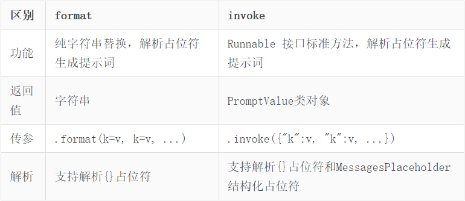
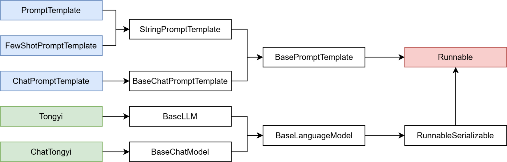
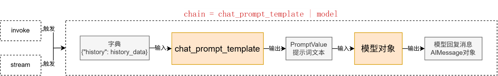

LangChain¶
简介¶
LangChain模型组件提供了与各种模型的集成，并为所有模型提供一个精简的统一接口。它作为一个“工具”，不提供任何LLMs，而是依赖于第三方集成的各种大模型。如OpenAI、Anthropic、Hugging Face、LlaMA、阿里Qwen、ChatGLM等平台的模型无缝接入你的应用。
LangChain目前支持三种类型的模型：LLMs（大语言模型）、Chat Models(聊天模型)、Embeddings Models(嵌入模型）.
- LLMs:是技术范畴的统称，指基于大参数量、海量文本训练的 Transformer 架构模型，核心能力是理解和生成自然语言，主要服务于文本生成场景
- 聊天模型:是应用范畴的细分，是专为对话场景优化的 LLMs，核心能力是模拟人类对话的轮次交互，主要服务于聊天场景
- 文本嵌入模型: 文本嵌入模型接收文本作为输入, 得到文本的向量.
LangChain支持的三类模型，它们的使用场景不同，输入和输出不同，开发者需要根据项目需要选择相应。
安装部署¶
这里只介绍学习过程中需要的一些库
* langchain：核心包
* langchain-community：社区支持包，提供了更多的第三方模型调用（我们用的阿里云千问模型就需要这个包）
* langchain-ollama：Ollama支持包，支持调用Ollama托管部署的本地模型
* langchain-chroma：ChromaDB支持包，支持调用ChromaDB
* dashscope：阿里云通义千问的Python SDK
* chromadb：轻量向量数据库（后续使用）
* bs4：BeautifulSqop4库，协助解析HTML文档（后续学习文档加载器使用）
模型调用的分类¶
角度1、按照模型功能的不同 * 非对话模型（LLMs、Text Model） * 对话模型（Chat Models） （推荐） * 嵌入模型（Embeddings Models）
角度2、模型调用时，几个重要参数书写的位置的不同 * 硬编码：写在代码文件中 * 使用环境变量 * 使用配置文件 （推荐）
角度3、具体API的调用
* OpenAI提供的API
* 其他大模型自家提供的API
* LangChain的统一方式调用API （推荐）
大语言模型调用方式¶
硬编码方式¶
from langchain_openai import ChatOpenAI
#获取对话模型
chat_model = ChatOpenAI(
#必要的三个参数
model="qwen-max",
base_url="https://dashscope.aliyuncs.com/compatible-mode/v1",
api_key="sk-e2efd0...")
#调用模型
response = chat_model.invoke("请介绍一下你自己")
#查看响应的文本
print(response)
content='您好，我是Qwen，这是我的英文名，您也可以叫我通义千问。我是阿里云自主研发的超大规模语言模型，能够回答问题、创作文字，还能表达观点、撰写代码。如果您有任何问题或需要帮助，请随时告诉我，我会尽力提供支持。' additional_kwargs={'refusal': None} response_metadata={'token_usage': {'completion_tokens': 58, 'prompt_tokens': 11, 'total_tokens': 69, 'completion_tokens_details': None, 'prompt_tokens_details': {'audio_tokens': None, 'cached_tokens': 0}}, 'model_name': 'qwen-max', 'system_fingerprint': None, 'finish_reason': 'stop', 'logprobs': None} id='run--ccc18076-fc34-4153-8efd-3fee0f2476cb-0' usage_metadata={'input_tokens': 11, 'output_tokens': 58, 'total_tokens': 69}
使用环境变量方式¶
使用环境变量的方法，在jupyter中执行不合适，需要在.py文件中执行。只适合当前环境，如果切换环境则还需更改。
直接在电脑高级系统设置中，在用户环境变量中添加**变量名+变量值**，例如OPENAI_API_KEY用于openai库，DASHSCOPE_API_KEY用于langchain库，第一次添加后要重启电脑。
from langchain_openai import ChatOpenAI
import os
#获取对话模型
chat_model = ChatOpenAI(
#必要的三个参数
model="gpt-3.5-turbo",
base_url=os.environ["OPENAI_BASE_URL"],
api_key=os.environ["OPENAI_API_KEY"])
#调用模型
response = chat_model.invoke("请介绍一下你自己")
#查看响应的文本
print(response)
使用配置文件方式¶
配置.env文件，当前目录下新建一个名为.env的文件，其中包含需要的配置信息：
方法1、from langchain_openai import ChatOpenAI
import os
import dotenv
#获取对话模型
chat_model = ChatOpenAI(
#必要的三个参数
model="qwen-max",
base_url=os.getenv("aliyun_base_url"),
api_key=os.getenv("aliyun_api_key"),
)
#调用模型
response = chat_model.invoke("请介绍一下你自己")
#查看响应的文本
print(response)
from langchain_openai import ChatOpenAI
import os
import dotenv
#加载配置文件
dotenv.load_dotenv()
os.environ["OPENAI_BASE_URL"] = os.getenv("aliyun_base_url")
os.environ["OPENAI_API_KEY"] = os.getenv("aliyun_api_key")
#获取对话模型
chat_model = ChatOpenAI(
#必要的三个参数
#model_name="gpt-4o-mini"，默认使用的是该模型
#当没有显示的声明base_url、api_key时，默认从环境变量中查找
model="qwen-max",
)
#调用模型
response = chat_model.invoke("请介绍一下你自己")
#查看响应的文本
print(response)
LLMs¶
直接返回结果¶
LLMs使用场景最多，常用大模型的下载库：
https://huggingface.co/models
https://modelscope.cn/models
同时LangChain支持对许多模型的调用，以通义千问为例：
import os
import dotenv
dotenv.load_dotenv()
from langchain_community.llms.tongyi import Tongyi
model = Tongyi(
model="qwen-plus",
api_key=os.getenv("aliyun_api_key"),
)
res = model.invoke("你是谁, 能做什么？")
print(res)
from langchain_ollama import OllamaLLM
model = OllamaLLM(model="qwen3.5:0.8b")
res = model.invoke("你是谁, 能做什么？")
print(res)
流式输出¶
如果需要流式输出结果，需要将模型的invoke方法改为stream方法即可。 * invoke方法：一次型返回完整结果 * stream方法：逐段返回结果，流式输出
这两个方法是新版LangChain(1.0版本后)中基于Runnable接口的通用核心方法。绝大多数组件（如提示词模板、链、向量检索、工具调用等）都支持这两个方法，这也是 LangChain 设计的核心统一范式。
import os
import dotenv
from langchain_community.llms.tongyi import Tongyi
dotenv.load_dotenv()
model = Tongyi(
# 不用qwen3-max，因为qwen3-max是聊天模型，qwen-max是大语言模型
model="qwen-max",
api_key=os.getenv("aliyun_api_key"),
)
# 通过stream方法获得流式输出
res = model.stream("你是谁, 能做什么？")
for chunk in res:
print(chunk,end="", flush=True)
Chat Models（对话模型）¶
聊天消息包含下面几种类型，使用时需要按照约定传入合适的值：
- AIMessage: 就是 AI 输出的消息，可以是针对问题的回答. (OpenAI库中的assistant角色）
- HumanMessage: 人类消息就是用户信息，由人给出的信息发送给LLMs的提示信息，比如“实现一个快速排序方法”. (OpenAI库中的user角色）
- SystemMessage: 可以用于指定模型具体所处的环境和背景，如角色扮演等。你可以在这里给出具体的指示，比如“作为一个代码专家”，或者“返回json格式”. (OpenAI库中的system角色）
import os
import dotenv
#加载配置文件
dotenv.load_dotenv()
os.environ["DASHSCOPE_BASE_URL"] = os.getenv("aliyun_base_url")
os.environ["DASHSCOPE_API_KEY"] = os.getenv("aliyun_api_key")
from langchain_community.chat_models.tongyi import ChatTongyi
from langchain_core.messages import HumanMessage
# 初始化模型
chat = ChatTongyi(model="qwen3-max")
# 准备消息list
messages = [
HumanMessage(content="给我写一首唐诗")
]
# 流式输出
for chunk in chat.stream(input=messages):
print(chunk.content, end="", flush=True)
好的，这是一首模仿盛唐气象创作的七言绝句，题为《塞上闻笛》：
**《塞上闻笛》**
**玉门霜落月如钩，**
**铁马冰河夜戍楼。**
**忽听胡笳声裂帛，**
**万山烽火一时收。**
......
from langchain_community.chat_models.tongyi import ChatTongyi
from langchain_core.messages import HumanMessage, SystemMessage
# 初始化模型
chat = ChatTongyi(model="qwen3-max")
# 准备消息list
messages = [
SystemMessage(content="你是一名来自边塞的诗人"),
HumanMessage(content="给我写一首唐诗")
]
# 流式输出
for chunk in chat.stream(input=messages):
print(chunk.content, end="", flush=True)
from langchain_community.chat_models.tongyi import ChatTongyi
from langchain_core.messages import HumanMessage, SystemMessage, AIMessage
# 初始化模型
chat = ChatTongyi(model="qwen3-max")
# 准备消息list
messages = [
SystemMessage(content="你是一名来自边塞的诗人"),
HumanMessage(content="给我写一首唐诗"),
AIMessage(content="锄禾日当午，汗滴禾下土，谁知盘中餐，粒粒皆辛苦。"), #ai回复的消息
HumanMessage(content="按照你上一首回复的格式，再来一首")
]
# 流式输出
for chunk in chat.stream(input=messages):
print(chunk.content, end="", flush=True)
通过2元元组封装信息: * 第一个元素为角色 * 字符串：system/human/ai * 第二个元素为内容
messages = [
("system", "你是一个边塞诗人。"),
("human", "写一首唐诗"),
("ai", "锄禾日当午，汗滴禾下土，谁知盘中餐，粒粒皆辛苦。"),
("human", "按照你上一个回复的格式，再写一首唐诗。")
]
区别和优势在于，使用类对象的方式，如下：
1、是静态的，一步到位，直接就得到了Message类的类对象
messages = [
SystemMessage(content="你是一名来自边塞的诗人"),
HumanMessage(content="给我写一首唐诗"),
AIMessage(content="锄禾日当午，汗滴禾下土，谁知盘中餐，粒粒皆辛苦。"), #ai回复的消息
HumanMessage(content="按照你上一首回复的格式，再来一首")
]
messages = [
("system", "你是一个边塞诗人。"),
("human", "写一首唐诗"),
("ai", "锄禾日当午，汗滴禾下土，谁知盘中餐，粒粒皆辛苦。"),
("human", "按照你上一个回复的格式，再写一首唐诗。")
]
Embeddings Models（嵌入模型）¶
Embeddings Models嵌入模型的特点：将字符串作为输入，返回一个浮点数的列表（向量）。
在NLP中，Embedding的作用就是将数据进行文本向量化。
1、阿里云千问模型访问方式：
from langchain_community.embeddings import DashScopeEmbeddings
# 初始化嵌入模型对象，其默认使用模型是：text-embedding-v1
embed = DashScopeEmbeddings()
# 单次转换
print(embed.embed_query("我喜欢你"))
# 批量转换
print(embed.embed_documents(['我喜欢你', '我稀饭你', '晚上吃啥']))
[-3.02587890625, 3.3109374046325684, 4.410546779632568,...]
[[-2.075488328933716, -2.4903321266174316,...],[...],[...]]
通过langchain_ollama导入OllamaEmbeddings使用，其余不变。
from langchain_ollama import OllamaEmbeddings
# 初始化嵌入模型对象，其默认使用模型是：text-embedding-v1
embed = OllamaEmbeddings(model="qwen3-embedding")
# 测试
print(embed.embed_query("我喜欢你"))
print(embed.embed_documents(['我喜欢你', '我稀饭你', '晚上吃啥']))
通用prompt（zero-shot）¶
提示词优化在模型应用中非常重要，LangChain提供了PromptTemplate类，用来协助优化提示词。
PromptTemplate表示提示词模板，可以构建一个自定义的基础提示词模板，支持变量的注入，最终生成所需的提示词。
1、标准写法
from langchain_core.prompts import PromptTemplate
from langchain_community.llms.tongyi import Tongyi
prompt_template = PromptTemplate.from_template(
"我的邻居姓{lastname}, 刚生了{gender}, 帮忙起名字，请简略回答。"
)
# 变量注入，生成提示词文本
prompt_text = prompt_template.format(lastname="张", gender="女儿")
model = Tongyi(model="qwen-max") # 创建模型对象
res = model.invoke(input=prompt_text) # 调用模型获取结果print(res)
2、基于chain链的写法
from langchain_core.prompts import PromptTemplate
from langchain_community.llms.tongyi import Tongyi
prompt_template = PromptTemplate.from_template(
"我的邻居姓{lastname}, 刚生了{gender}, 帮忙起名字，请简略回答。"
)
model = Tongyi(model="qwen-max") # 创建模型对象
# 生成链
chain = prompt_template | model
# 基于链，调用模型获取结果
res = chain.invoke(input={"lastname": "曹", "gender": "女儿"})
print(res)
FewShotPromptTemplate¶
from langchain_core.prompts import FewShotPromptTemplate
FewShotPromptTemplate(
examples=None,
example_prompt=None,
prefix=None,
suffix=None,
input_variables=None
)
* examples：示例数据，list，内套字典 * example_prompt：示例数据的提示词模板 * prefix：组装提示词，示例数据前内容 * suffix：组装提示词，示例数据后内容 * input_variables：列表，声明在前缀或后缀中所需要注入的变量名
from langchain_core.prompts import FewShotPromptTemplate,PromptTemplate
example_template = PromptTemplate.from_template("单词:{word}, 反义词:{antonym}")
example_data = [ # 示例数据，list内套字典
{"word": "大", "antonym": "小"},
{"word": "上", "antonym": "下"}
]
few_shot_prompt = FewShotPromptTemplate( # FewShot提示词模板对象
example_prompt=example_template,
examples=example_data,
prefix="给出给定词的反义词，有如下示例：",
suffix="基于示例告诉我：{input_word}的反义词是？",
input_variables=['input_word']
)
# 获得最终提示词
prompt_text = few_shot_prompt.invoke(input={"input_word": "左"}).to_string()
# print(prompt_text)
model = ChatTongyi(model="qwen3-max")
for chunk in model.stream(input=prompt_text):
print(chunk.content, end="", flush=True)
PromptTemplate、FewShotPromptTemplate、ChatPromptTemplate等都拥有format和invoke这2类方法。

ChatPromptTemplate¶
PromptTemplate：通用提示词模板，支持动态注入信息。
FewShotPromptTemplate：支持基于模板注入任意数量的示例信息。
ChatPromptTemplate：支持注入任意数量的历史会话信息。
- 通过from_messages方法，从列表中获取多轮次会话作为聊天的基础模板
（前面PromptTemplate类用的from_template仅能接入一条消息，而from_messages可以接入一个list的消息）
历史会话信息并不是静态的（固定的），而是随着对话的进行不停地积攒，即动态的。 所以，历史会话信息需要支持动态注入。 * MessagePlaceholder作为占位 * 提供history作为占位的key * 基于invoke动态注入历史会话记录
必须是invoke，format无法注入。
示例：基于对话模型，组装聊天历史的模式，做提示词工程
from langchain_community.chat_models import ChatTongyi
from langchain_core.output_parsers import StrOutputParser
from langchain_core.prompts import ChatPromptTemplate, MessagesPlaceholder
from langchain_core.messages import HumanMessage, AIMessage
prompt = ChatPromptTemplate.from_messages(
[
("system", "给出每个单词的反义词"),
# 存储多轮对话的历史记录 history是占位符名称,后续从字典按history作为key取value替代内容
MessagesPlaceholder("history"),
("human", "{question}")
]
)
model = ChatTongyi(model="qwen3-max")
# StrOutputParser() LangChain内置的结果解析器,可以直接提取结果文本内容,剔除其余元数据信息
chain = prompt | model | StrOutputParser()
# 无历史会话的提问
for chunk in chain.stream(input={"history": [], "question": "粗"}):
print(chunk)
print("*"*20)
#带有历史的提问 用 HumanMessage（用户消息）和 AIMessage（模型消息）封装历史对话
history = [ # history 要求是一个列表,内部封装用户和AI的对话记录
HumanMessage(content="开心"), # 对应 ("human", "开心")
AIMessage(content="难过"), # 对应 ("ai", "难过")
HumanMessage(content="高"), # 对应 ("human", "高")
AIMessage(content="矮") # 对应 ("ai", "矮")
]
# 简化写法,元组的第一个元素是角色(标准角色名 human ai) 第二个元素是消息
# history = [
# ("human", "开心"), ("ai", "难过"),
# ("human", "高"), ("ai", "矮")
# ]
for chunk in chain.stream(input={"history": history, "question": "粗"}):
print(chunk)
cahin链¶
「将组件串联，上一个组件的输出作为下一个组件的输入」是 LangChain 链（尤其是 | 管道链）的核心工作原理，这也是链式调用的核心价值：实现数据的自动化流转与组件的协同工作，如下。
chain = prompt_template | model
核心前提：即Runnable子类对象才能入链（以及Callable、Mapping接口子类对象也可加入）。
我们目前所学习到的组件，均是Runnable接口的子类，如下类的继承关系：

from langchain_core.prompts import ChatPromptTemplate, MessagesPlaceholder
from langchain_community.chat_models.tongyi import ChatTongyi
from langchain_core.runnables.base import RunnableSerializable
chat_prompt_template = ChatPromptTemplate.from_messages(
[
("system", "你是一个边塞诗人，可以作诗。"),
MessagesPlaceholder("history"),
("human", "请再来一首唐诗，无需额外输出"),
]
)
history_data = [
("human", "你来写一个唐诗"),
("ai", "床前明月光，疑是地上霜，举头望明月，低头思故乡"),
("human", "好诗再来一个"),
("ai", "锄禾日当午，汗滴禾下锄，谁知盘中餐，粒粒皆辛苦"),
]
model = ChatTongyi(model="qwen3-max")
# 组成链，要求每个组件都是Runnable接口的子类
# 返回的chain是RunnableSerializable对象（也是Runnable接口的子类）
chain = chat_prompt_template | model
print(type(chain))
# Runnable接口，invoke执行
res = chain.invoke({"history": history_data})
print(res.content)
# Runnable接口，stream执行
for chunk in chain.stream({"history": history_data}):
print(chunk.content, end="", flush=True)
- 通过|链接提示词模板对象和模型对象
- 返回值chain对象是RunnableSerializable对象
- 是Runnable接口的直接子类
- 也是绝大多数组件的父类
- 通过invoke或stream进行阻塞执行或流式执行
组成的链在执行上有：上一个组件的输出作为下一个组件的输入的特性。 所以有如下执行流程：

StrOutputParser字符串输出解析器¶
如下代码，想要以第一次模型的输出结果，第二次去询问模型：
* 链的构建完全符合要求（参与的组件）
* 但是运行报错（ValueError: Invalid input type
from langchain_core.prompts import PromptTemplate
from langchain_community.chat_models.tongyi import ChatTongyi
model = ChatTongyi(model="qwen3-max")
prompt = PromptTemplate.from_template(
"我邻居姓：{lastname}, 刚生了{gender}，请起名，仅告知名字无需其它内容"
)
chain = prompt | model | model
res = chain.invoke({"lastname": "张", "gender": "女儿"})
print(res.content)
而模型（ChatTongyi）源码中关于invoke方法明确指定了input的类型：
@override def invoke( self, input: LanguageModelInput, config: RunnableConfig | None = None, *, stop: list[str] | None = None, **kwargs: Any, ) -> AIMessage: LanguageModelInput = PromptValue | str | Sequence[MessageLikeRepresentation] """Input to a language model."""
所以需要做类型转换，可以借助LangChain内置的解析器:StrOutputParser字符串输出解析器
StrOutputParser是LangChain内置的简单字符串解析器
* 可以将AIMessage解析为简单的字符串，符合了模型invoke方法要求（可传入字符串，不接收AIMessage类型）
* 是Runnable接口的子类（可以加入链）
parser = StrOutputParser()
chain = prompt | model | parser | model
JsonOutputParser¶
chain = prompt | model | parser | model | parser
在前面我们完成了这样的需求去构建多模型链，不过这种做法并不标准，因为： 上一个模型的输出，没有被处理就输入下一个模型。 正常情况下我们应该有如下处理逻辑：
invoke｜stream 初始输入 -> 提示词模板 -> 模型 -> 数据处理 -> 提示词模板 -> 模型 -> 解析器 > 结果
即：上一个模型的输出结果，应该作为提示词模版的输入，构建下一个提示词，用来二次调用模型。
- 模型的输出为：AIMessage类对象
- 提示词模板要求输入如下代码：
def invoke( self, input: dict, config: RunnableConfig | None = None, **kwargs: Any ) -> PromptValue:
所以，我们需要完成：
将模型输出的AIMessage -> 转为字典 -> 注入第二个提示词模板中，形成新的提示词（PromptValue对象）
StrOutputParser不满足（AIMessage -> Str）
更换为JsonOutputParser（AIMessage -> Dict(JSON)）
from langchain_core.output_parsers import StrOutputParser
from langchain_core.output_parsers import JsonOutputParser
from langchain_core.prompts import PromptTemplate
from langchain_community.chat_models.tongyi import ChatTongyi
str_parser = StrOutputParser()
json_parser = JsonOutputParser()
model = ChatTongyi(model="qwen3-max")
first_prompt = PromptTemplate.from_template(
"我邻居姓：{lastname}，刚生了{gender}，请起名，并封装到JSON格式返回给我，"
"要求key是name，value就是起的名字。请严格遵守格式要求"
)
second_prompt = PromptTemplate.from_template(
"姓名{name}，请帮我解析含义。"
)
# 第一个模型输出严格要求字典格式，不然无法用json_parser将AIMessage转成真正的字典形式（通过优化提示词实现）
chain = first_prompt | model | json_parser | second_prompt | model | str_parser
res = chain.invoke({"lastname": "张", "gender": "女儿"}) #返回：str
print(res)
print(type(res))
自定义函数加入链¶
chain = first_prompt | model | json_parser | second_prompt | model | str_parser
前文我们根据JsonOutputParser完成了多模型执行链条的构建。 * 除了JsonOutputParser这类固定功能的解析器之外 * 我们也可以自己编写Lambda匿名函数来完成自定义逻辑的数据转换，想怎么转换就怎么转换，更自由。 想要完成这个功能，可以基于RunnableLambda类实现。
RunnableLambda类是LangChain内置的，将普通函数等转换为Runnable接口实例，方便自定义函数加入chain。
语法： RunnableLambda(函数对象或lambda匿名函数)
from langchain_core.output_parsers import StrOutputParser
from langchain_core.runnables import RunnableLambda
from langchain_core.prompts import PromptTemplate
from langchain_community.chat_models.tongyi import ChatTongyi
str_parser = StrOutputParser()
my_func = RunnableLambda(lambda ai_msg: {"name": ai_msg.content})
model = ChatTongyi(model="qwen3-max")
first_prompt = PromptTemplate.from_template(
"我邻居姓：{lastname}，刚生了{gender}，请起名，仅告知我名字，不要额外信息"
)
second_prompt = PromptTemplate.from_template(
"姓名{name}，请帮我解析含义。"
)
chain = first_prompt | model | my_func | second_prompt | model | str_parser
res = chain.invoke({"lastname": "张", "gender": "女儿"})
print(res)
print(type(res))
“张若曦”是一个富有诗意和文化内涵的中文名字，我们可以从姓氏和名字两部分来解析其含义：
一、姓氏：“张”
“张”是中国最常见的姓氏之一...
二、名字：“若曦”...
三、整体寓意： ...
四、音韵与美感： ...
五、文化意蕴： ...
总结：
“张若曦”寓意美好，象征如晨光般温柔明亮、充满希望，兼具诗意与优雅，是一个极具美感与深意的名字。
<class 'langchain_core.messages.base.TextAccessor'>
也可以直接将函数加入链
chain = first_prompt | model | (lambda ai_msg: {"name": ai_msg.content}) | second_prompt | model | str_parser
跳过RunnableLambda类，直接让函数加入链也是可以的。
因为Runnable接口类在实现__or__的时候，支持Callable接口的实例。
* 函数就是Callable接口的实例
def __or__(
self,
other: Runnable[Any, Other]
| Callable[[Iterator[Any]], Iterator[Other]]
| Callable[[AsyncIterator[Any]], AsyncIterator[Other]]
| Callable[[Any], Other]
| Mapping[str, Runnable[Any, Other] | Callable[[Any], Other] | Any],
) -> RunnableSerializable[Input, Other]:
如上代码示例，|符号（底层是调用__or__）组链，是支持函数加入的。 其本质是将函数自动转换为RunnableLambda